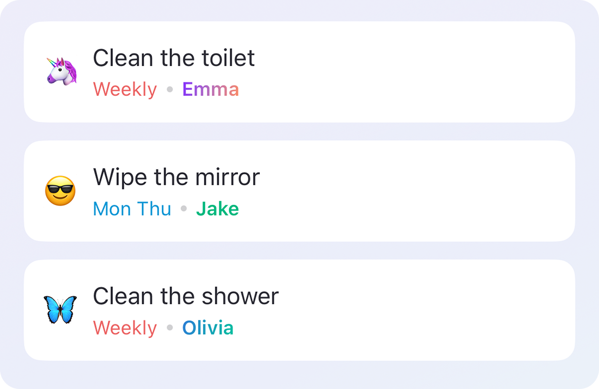
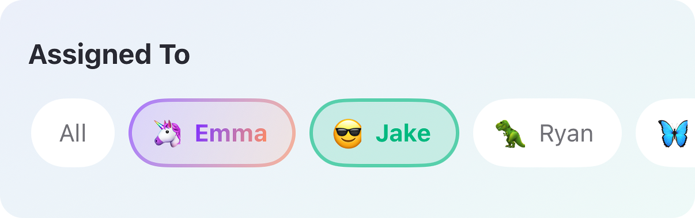
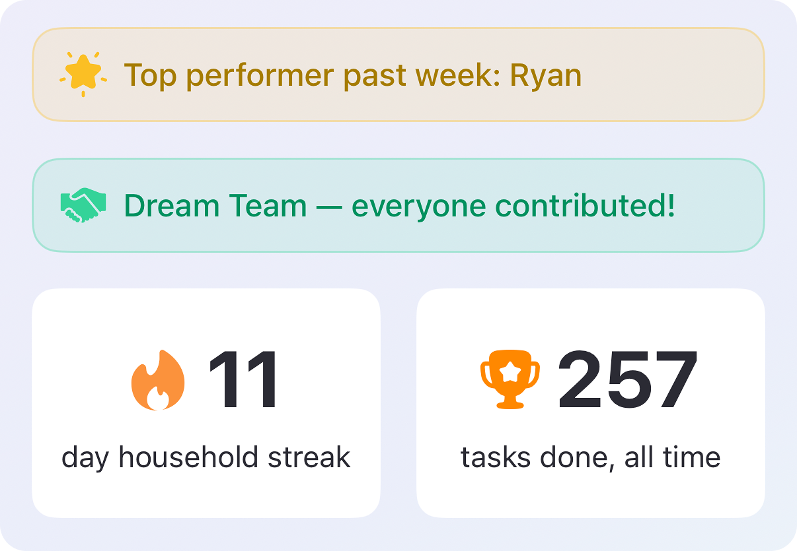
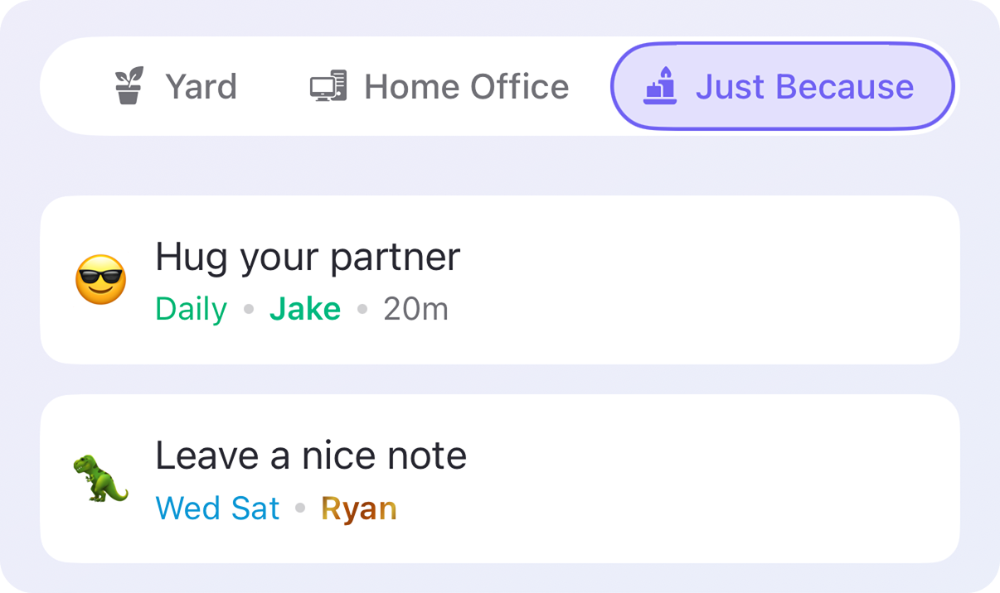
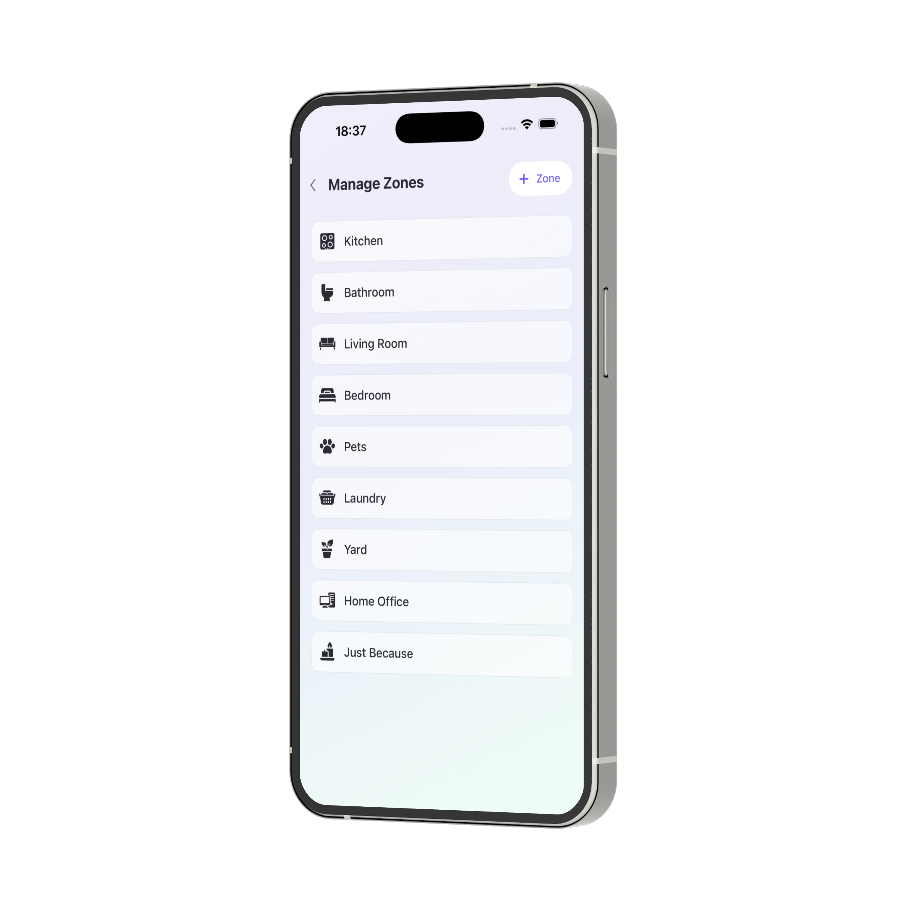
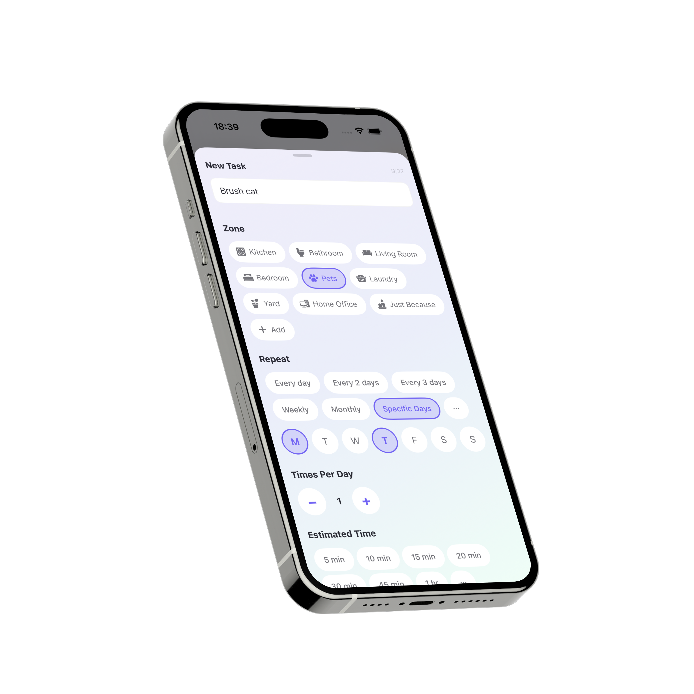
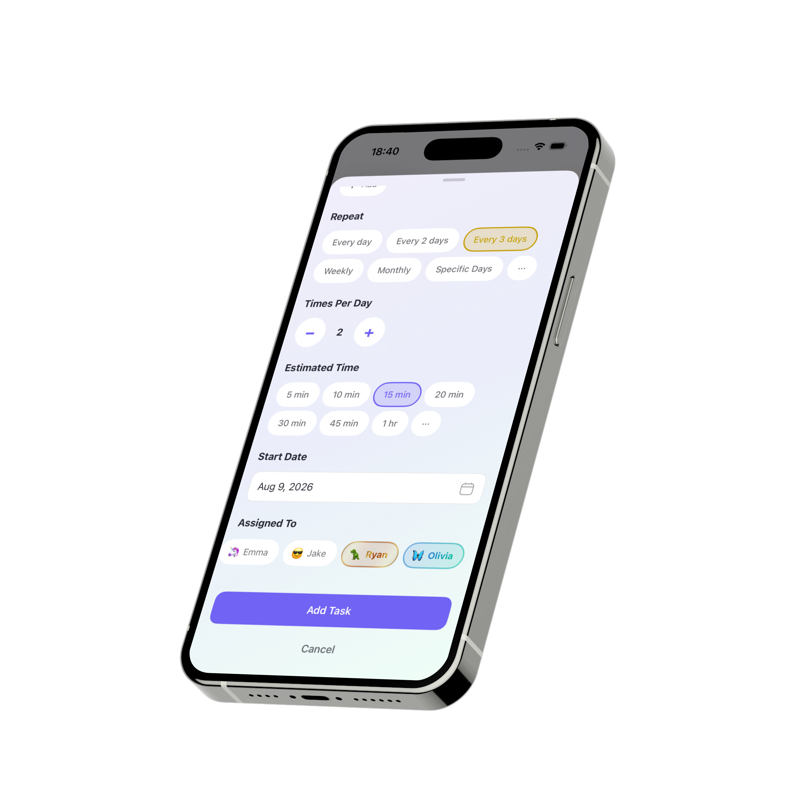
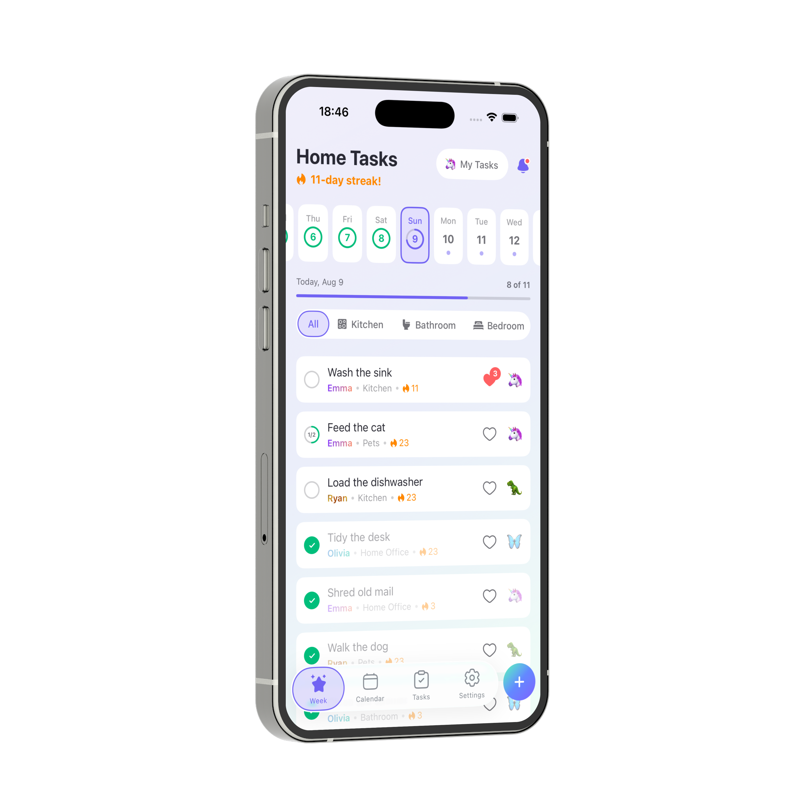
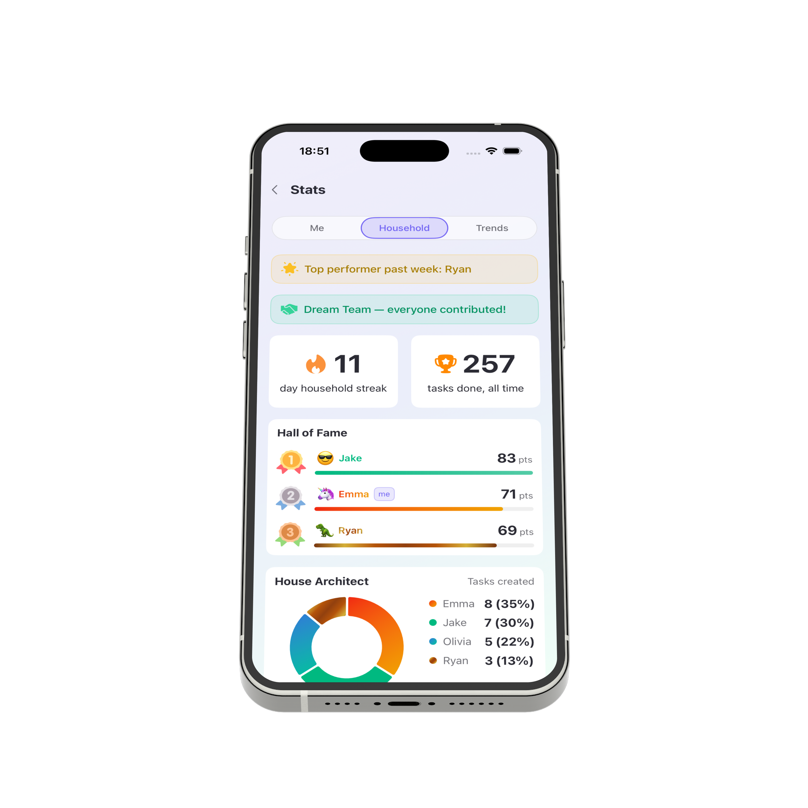

Break anything overwhelming (chores, work, pet
care) into steps as small as you need. It still counts
Set a task to repeat daily, weekly or on your own schedule, and stop holding it in your head

Reassign or edit any task in a tap. Hand it to whoever has time, no hard feelings, just helping each other out

Points, levels and a household leaderboard keep your streak going, so the progress actually shows

Assign a task to anyone in the house, including "hug your partner." Not everything has to be a chore

Kitchen, work, the dog. Split everything into whatever areas make sense before it turns into one endless list

Daily, weekly, every third Tuesday: pick a frequency and stop being the household's human calendar

Running behind on something? Tap reassign and someone else picks it up. That's what having backup is for

Heart a task to tell someone "nice job", like when they actually make the bed properly

A household leaderboard, Hot Zones and streaks, so nobody's quietly doing more than everyone thinks

No team, no office, no roadmap meetings. Just me, building the tool I actually wanted: a way to take one big, vague task and turn it into pieces small enough that starting doesn't feel impossible.
It started as a chores app, but zones work for anything piling up: work, pet care, whatever's been sitting on a list too long. I designed it, wrote the code, and I'm the one who reads your feedback if you send it
A one-woman band, doing her best to get this right.
Check back soon